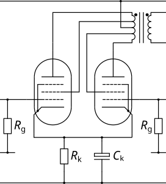

| Circuit Parameter | Operating Point | ||
|---|---|---|---|
| Field 1 | Value 1 | ||
| Field 2 | Value 2 | ||
| Field 3 | Value 3 | ||
| Field 4 | Value 4 | ||
| Field 5 | Value 5 | ||
| Field 6 | Value 6 | ||
| Field 7 | Value 7 | ||
| Field 8 | Value 8 | ||
Ultralinear output stages involve connecting the screen of an output pentode to a tap on the primary of the output transformer. What this means is that the screen voltage is always a fixed percentage between the rail and the anode. With the tap set at 100%, the screen is connected to the anode, i.e. the valve will be "triode-strapped" while, at the opposite extreme, the screen is simply permanently connected to the supply voltage. A tap somewhere in the middle leads to characteristic curves that are somewhere between a pentode and a triode. This is useful for HiFi amplifiers because it preserves most of the output swing of the pentode while conferring some of the limearity of a triode.
Note that there isn't a separate design calculator for triode-strapped pentodes as this calculator achieves that with a tap value of 1.0